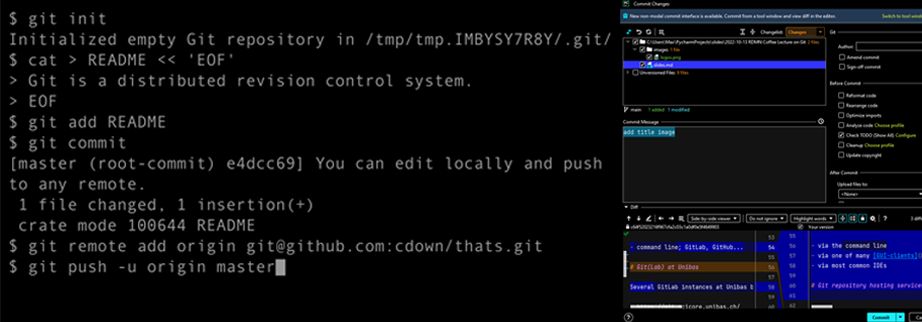

Version Control and Documentation with GitHub
Dr. Maximilian Hindermann
April 19, 2024
Program
- 0900-0915 Introduction
- 0915-0930 Version control with Git
- 0930-1000 Git(Hub) core concepts and live demo
- 1000-1015 Primer on documentation
- 1015-1045 GitHub documentation and best practices
- 1045-1100 Q&A
About us
- Email: rise@unibas.ch
- Web: https://rise.unibas.ch/
- GitHub: https://github.com/RISE-UNIBAS
Today’s goal
- Get you in a position to decide if Git(Hub) is relevant to your work.
- Get you in a position to start writing great documentation.
- Understand how using version control and documentation can be used to:
Version control with Git
What is Git?
- Git is a distributed version control system (VCS).
- A VCS is “a system that records changes to a file or set of files over time so that specific versions can be recalled later” (Chacon & Straub 2014: 10).
- Git is very well suited for text-like data such as code, but of course also for text-like data such as:
- an ALTO-XML file encoding the transcript of a medieval manuscript
- a CSV file recording numerical weather data for Basel
- a JSON-LD file containing a Tropy database
- an SVG file of a research project’s fancy new logo
- a TXT file containing a novel from Project Gutenberg
- Git is less well suited for binary data such as audio data, images or video (changes in these files are opaque), especially if these files are large (>100MB); use Git Large File Storage extensionin such cases.
Local version control

- Solves the problem of error-prone manual versioning of files.
Centralized version control

- Solves the problem of how to work on the same files together on different computers.
Distributed version control

- Solves the problem of being dependent on central server for work and backup.
Using Git

After installation on your computer, you can use Git:
- via the command line
- via one of many GUI-clients
- via most common IDEs
Git repository hosting services
But where do I host my Git repository? Do I have to configure a server myself?
- No. In practice, most users rely on a commercial Git repository hosting service such as GitHub, GitLab, Bitbucket, or others.

- Git repository hosting services do not replace but extend Git!
GitLab at Unibas
In contrast to GitHub, GitLab can be installed on your own infrastructure (e.g., required for sensitive data).
There are several GitLab instances at Unibas but none run as official university-wide service:
National infrastructure
Switch offers a GitLab instance, c4science supports Git:
Git(Hub) core concepts
Connect to GitHub
There are various ways in which you can interact with GitHub. In this course, we limit ourselves to the following:
- The web-interface on https://github.com/ in your browser.
- GitHub Desktop.
Task 2
Please install GitHub Desktop on your machine.
If you want to use your IDE instead of GitHub Desktop, you are free to do so, but we can only offer limited support, namely for PyCharm or RStudio.
Repository
A repository is the most basic element of GitHub. They’re easiest to imagine as a project’s folder. A repository contains all of the project files (including documentation), and stores each file’s revision history. Repositories can have multiple collaborators and can be either public or private.
From GitHub glossary/repository
Task 3: Create a repository on with the GitHub web-interface
- read the documentation on how to create a new repository with the GitHub web-interface
- create a new public “test”-repository and include a README file with the web-interface
Commit
A commit, or “revision”, is an individual change to a file (or set of files). When you make a commit to save your work, Git creates a unique ID (a.k.a. the “SHA” or “hash”) that allows you to keep record of the specific changes committed along with who made them and when. Commits usually contain a commit message which is a brief description of what changes were made.
From GitHub glossary/commit
Task 4: Commit to a repository with the GitHub web-interface
- add some text to the README file and commit the changes with the GitHub web-interface
Clone
A clone is a copy of a repository that lives on your computer instead of on a website’s server somewhere, or the act of making that copy. When you make a clone, you can edit the files in your preferred editor and use Git to keep track of your changes without having to be online. The repository you cloned is still connected to the remote version so that you can push your local changes to the remote to keep them synced when you’re online.
From GitHub glossary/clone
Task 5: Sign in to GitHub Desktop
- read the documentation on how to sign in to GitHub Desktop
- sign in to GitHub Desktop
Task 6: Clone a repository with GitHub Desktop
- read the documentation on how to clone a repository with GitHub Desktop
- clone the “test”-repository with GitHub Desktop
Push
To push means to send your committed changes to a remote repository on GitHub.com. For instance, if you change something locally, you can push those changes so that others may access them.
From GitHub glossary/push
Task 7: Push a commit to remote with GitHub Desktop
- open the README file on the local “test”-repository, add some text, and save the file
- read the documentation on how to commit and push your changes with GitHub Desktop
- commit your changes to the “main”-branch of the “test”-repository with GitHub Desktop
- push your changes to the remote “test”-repository with GitHub Desktop
Branches
A branch is a parallel version of a repository. It is contained within the repository, but does not affect the primary or main branch allowing you to work freely without disrupting the “live” version. When you’ve made the changes you want to make, you can merge your branch back into the main branch to publish your changes.
From GitHub glossary/branch
Task 8: Create a “new”-branch with the GitHub web-interface
- read the documentation on creating branches with the web-interface
- create a branch called “new” with the web-interface
Task 9: Commit to “new”-branch with the GitHub web-interface
- read the documentation on viewing branches with the web-interface
- commit a new TXT file called “hello.txt” to the “new”-branch with the web-interface
Pull
Pull refers to when you are fetching in changes and merging them. For instance, if someone has edited the remote file you’re both working on, you’ll want to pull in those changes to your local copy so that it’s up to date.
From GitHub glossary/pull
Task 10: Switch to “new”-branch with GitHub Desktop
- read the documentation on switching branches with GitHub Desktop
- switch to “new”-branch with GitHub Desktop
Merge and pull requests
Merging takes the changes from one branch (in the same repository or from a fork), and applies them into another. This often happens as a “pull request” (which can be thought of as a request to merge), or via the command line. A merge can be done through a pull request via the GitHub.com web interface if there are no conflicting changes, or can always be done via the command line.
From GitHub glossary/merge
Task 11: Merge “new”-branch into main via a pull request
- read the documentation on creating a pull request with GitHub Desktop
- create a pull request from “new”-branch into “main”-branch with GitHub Desktop
- read the documentation on merging pull requests with the web-interface
- merge the pull request with the web-interface
Task 12: Delete the “new”-branch with the GitHub web-interface
- read the documentation on deleting branches with the web-interface
- delete the “new”-branch with the web-interface
Optional tasks
Task 13: review a pull request
- read the documentation on pull request reviews
- pair up with one of your peers from this course
- clone their “test”-repository
- change a file and make a pull request
- review their pull request to your “test”-repository
Task 14: create and resolve a merge conflict
- read the documentation on merge conflicts
- create a merge conflict in your “test”-repository
- try to resolve the merge conflict
Primer on documentation
Why is documentation important?
Without documentation your future self (let alone other people) won’t be able to easily read your code and your code won’t be FAIR :
“Software, including its documentation and license, should meet domain-relevant community standards and coding practices (e.g., choice of programming language, standards for testing, usage of file formats, accessibility […]) that enable reuse” (Chue Hong et al. 2022: 13).
In addition, apart from the time and money spent (re)understanding your undocumented code, this potentially means many missed out opportunities, including:
- Publications (results not reproducible or black boxed)
- Collaboration
- Funding
Different levels of documentation

Documentation is required at different levels of your research project:
- Project level
- User level
- Systems level
Image credit: xkcd, “Documents”, CC BY-NA 2.5.
Project level documentation
A README file provides information about your files (code, data, and others) and how they are interrelated. The University of Basel’s RDMN provides more resources on data and file organization. The structure of a README file should include:
- General information
- File overview
- Sharing and access information
- Methodological information
- File-specific information
User level documentation
“IEEE Standard for Software User Documentation” in IEEE Std 1063-1987: 1-20, 10.1109/IEEESTD.1988.121943.
In order to create good user software documentation, answer the following questions:
- What part(s) of the software need to be documented?
- Who is the audience of the documentation?
- What is the information required by the target audience?
- What is the usage mode of the documentation?
GitHub best practices
README.md
You can add a README file to your repository to tell other people why your project is useful, what they can do with your project, and how they can use it.
From the GitHub documentation on README files
Materials
Questions
- What is
.md for a file type?
- What should go into a README file?
- How many README files does one need?
LICENSE.md
Public repositories on GitHub are often used to share open source software. For your repository to truly be open source, you’ll need to license it so that others are free to use, change, and distribute the software.
From the GitHub documentation on licensing a repository
Materials
Questions
- Why do you need a license for research software or research data?
- What are suitable licenses in this context?
CITATION.cff
You can add a CITATION.cff file to the root of a repository to let others know how you would like them to cite your work. The citation file format is plain text with human- and machine-readable citation information.
From the GitHub documentation on CITATION files
Materials
- The CITATION file of this course is here.
- You can use the cffinit tool to create or update your CITATION file.
Questions
- What is an ORCID ID, what is a DOI?
Releases
GitHub’s way of packaging and providing software to your users.
From GitHub glossary/release
Materials
Questions
- What do I put in the release notes?
Zenodo pipeline
GitHub repositories can be published to Zenodo as releases.
Materials
- GitHub documentation on issuing a persistent identifier for your repository with Zenodo-
- A more detailed documentation is here.
CHANGELOG.md
A changelog is a file which contains a curated, chronologically ordered list of notable changes for each version of a project.
From https://keepachangelog.com/en/1.1.0/
Materials
Questions
- Why keep a changelog?
- Who needs a changelog?
GitHub pages
A static site hosting service designed to host your personal, organization, or project pages directly from a GitHub repository.
From GitHub glossary/GitHub pages
Materials
Questions
- What’s the advantage of having your documentation on GitHub pages?
Advanced topics: secrets, collaboration, automation
- How to keep your data and credentials safe?
- login credentials, API keys
- How to collaborate using GitHub?
- pull requests
- branch protection
- forking
- issues
- project management tools
- How to automate routine tasks or build data processing pipelines?
Getting help
- Documentation (see links below)
- Google is your friend
- Stackoverflow
- GPTs
- rise@unibas.ch
References and further reading